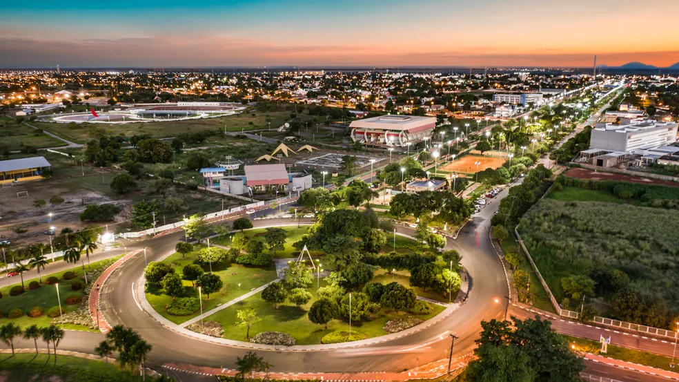

Roraima é o estado mais ao norte do Brasil, situado na Região Norte, fazendo fronteira com a Venezuela e a Guiana. Sua capital, Boa Vista, é a única capital do país que está totalmente localizada no hemisfério norte. O estado é conhecido por sua rica biodiversidade e paisagens naturais, como a famosa Serra do Tepequém e o Monte Roraima, um dos pontos mais altos do país, que inspirou a obra "O Mundo Perdido" de Arthur Conan Doyle. A economia de Roraima é baseada principalmente na agropecuária, extração mineral e, nos últimos anos, também no comércio e serviços, impulsionados por sua localização estratégica. A diversidade cultural de Roraima é marcante, com uma grande presença de comunidades indígenas, além de migrantes de outras regiões do Brasil e de países vizinhos.
